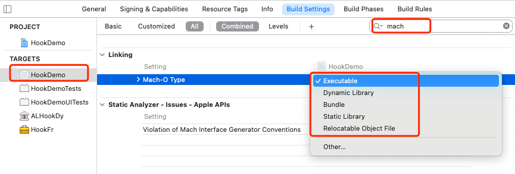
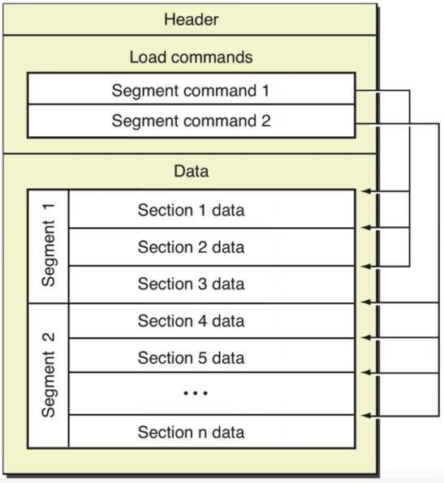
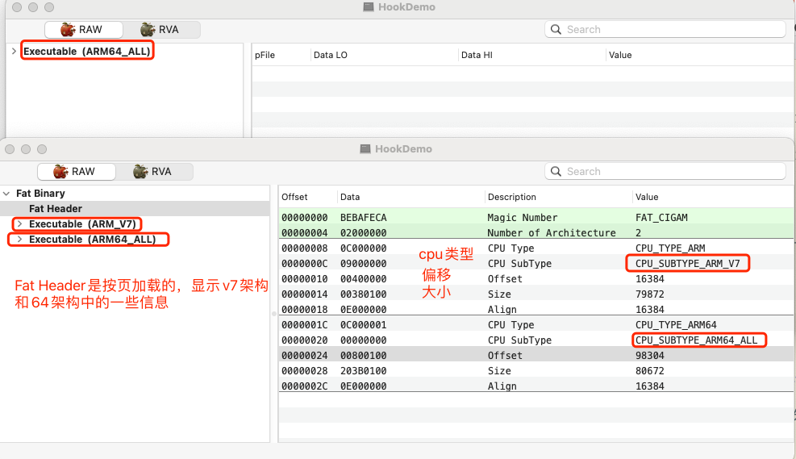
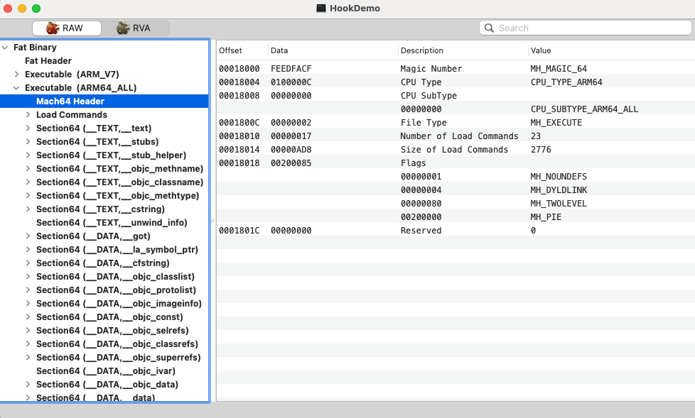

Mach-O简介
Mach-O其实是Mach Object文件格式的缩写，是mac以及iOS上可执行文件的格式， 类似于windows上的PE格式 (Portable Executable )， linux上的elf格式 (Executable and Linking Format)。
Mach-O是一种用于可执行文件、目标代码、动态库的文件格式。作为a.out格式的替代，Mach-O提供了更强的扩展性。
MachO格式的常见文件
- 目标文件.o
- 库文件
- .a
- .dylib
- .Framework
- 可执行文件
- dyld
- .dsym
关于静态库、动态库，这里有一篇文章，写的很好。
iOS静态库 【.a 和framework】【超详细】
clang编译
可以通过clang命令把对应的文件编译成mach-o文件：
1 | $ clang -c test.c |
就会出现一个test.o的文件，这个就是mach-o类型的文件。
可以通过file命令查看文件类型。
1 | $ file [文件路径] |
说明test.o文件是Mach-O，64位的object，适用于x86架构，64位
1 | // 编译为可执行文件 |
这个命令会吧test.o文件转换为可执行文件，类型为.out
1 | $ file test.out |
text.out是一个可执行文件。
clang编译多个文件
1 | $ clang -o demo test.c test1.c |
就是把test.c和test1.c两个文件合并为一个可执行文件demo
如果更改链接到顺序，则生成的可执行文件是不同的，md5值不同。
1 | $ clang -o demo1 test1.c test.c |
可以查看一下两个文件的md5值，是不同的，命令为md5 [filename]。
也可以通过objdump命令查看内容是否一样，这个命令类似于MachOView工具。
1 | $ objdump --macho -d [可执行文件file name] |
dyld
dyld（the dynamic link editor）是苹果的动态链接器，是苹果操作系统一个重要组成部分，在系统内核做好程序准备工作之后，交由dyld负责余下的工作。而且它是开源的，任何人可以通过苹果官网下载它的源码来阅读理解它的运作方式，了解系统加载动态库的细节。
dsym文件
当我们软件 release 模式打包或上线后，不会像我们在 Xcode 中那样直观的看到用崩溃的错误，这个时候我们就需要分析 crash report 文件了，iOS设备中会有日志文件保存我们每个应用出错的函数内存地址，通过 Xcode 的 Organizer 可以将 iOS 设备中的 DeviceLog 导出成 crash 文件，这个时候我们就可以通过出错的函数地址去查询 dSYM 文件中程序对应的函数名和文件名。大前提是我们需要有软件版本对应的 dSYM 文件，这也是为什么我们很有必要保存每个发布版本的 Archives 文件了。
在release下，编译之后查看dsym文件
1 | $ file file HookDemo.app.dSYM/Contents/Resources/DWARF/HookDemo |
这里出现了universal binary。这是个啥？就是通用二进制文件
通用二进制文件
mac系统所支持的cpu及硬件平台发生了很大的变化，为了解决软件在多个硬件平台上的兼容性问题，苹果开发了一个通用的二进制文件格式（Universal Binary）,又称胖二进制（Fat Binary）。
- 苹果公司提出的一种程序代码。能同时适用多种架构的二进制文件
- 同一个程序包中同时为多种架构提供最理想的性能。
- 因为需要储存多种代码，通用二进制应用程序通常比单一平台二进制的程序要大。但是由于两种架构有共通的非执行资源(代码以外的，图片等)，所以并不会达到单一版本的两倍之多。
- 而且由于执行中只调用一部分代码，运行起来也不需要额外的内存。
在xcode中可以更改Mach-O Type：

对于现在的Xcode来说，iOS11以上通过真机生成的可执行文件都是arm64架构，是单一架构。如果把最低版本修改为iOS10，重新真机编译，发现生成的可执行文件就是两种架构armv7 + arm64。
接下来，随便找个工程，release下编译，然后查看HookDemo.app -> HookDemo可执行文件
1 | $ file HookDemo |
也可以通过Targets -> Build Setting - Architectures修改架构，只不过目前来说都是arm64。可以添加armv7、armv7s。
armv7s是一种临时的支持iPhone5c上可用的架构。
iOS 指令集架构 armv6、armv7、armv7s、arm64、arm64e、x86_64、i386
原则上来说，架构都是向下兼容的。
lipo命令拆分、合并通用二进制文件
查看Mach-O文件包含的架构信息
1
$ lipo -info [MachO文件]
拆分某种架构
1
2$ lipo [MachO文件] –thin [架构] –output [输出文件路径]
$ lipo HookDemo -thin armv7 -output HookDemo_armv7合并多种架构
1
2lipo -create [MachO文件1] [MachO文件2] -output [生成的MachO文件]
lipo -create HookDemo_armv7 HookDemo_arm64 -output HookDemo_v7_64
可以在通过file命令查看拆分、合并的文件。
Macho文件结构
- Header ：包含该二进制文件的一般信息
- 字节顺序、架构类型、加载指令的数量等。
- 使得可以快速确认一些信息，比如当前文件用于32位还是64位，对应的处理器是什么、文件类型是什么
- Load commands：包含加载所需要的指令（动态库、静态库等）
- 内容包括区域的位置、符号表、动态符号表等
- Data ：内容包括区域的位置、符号表、动态符号表等
- 包含Segement的具体数据

接下来使用MachOView工具来分析可执行文件，有两种类型：
- 通用二进制文件，则显示的是Fat Binary
- 单一架构的文件，直接显示对应的Executable

Fat Binary
在上图中可以看到，首先是一个Fat Header的结构。在header中，可以猜到两个架构之间必定存在某些关联。
armv7：offset=16384，size=79872
arm64：offset=98304，size=80672
arm64是从98304开始的，比armv7多了 98304-(16384+79872)=2048，这个值只是一个差值，而从偏移的差值来看98304-16384=81920 = 5 * 16 * 1024
正好是5页数据，iOS中1页是16k，所以armv7是5页数据，最后的2038只是第5页数据没有排满而已。
Header
接下来看看arm64架构下的内容：

在Xcode中，我们可以在loader.h文件中找到Header的相关信息：
1 | struct mach_header_64 { |
这里只放了arm64下的内容，当然也有32位的，内容基本一致。
这里需要注意的是filettype类型，是一组宏定义，也能找到：
1 | #define MH_OBJECT 0x1 /* relocatable object file */ object文件 |
所以当看到0x2时，标识的就是可执行文件。在MachOView中，在Header中，可以看到对应的数据信息。
Load Commands
| LoadCommands | 说明 |
|---|---|
| LC_SEGMENT_64 | 将文件中（32位或64位）的段映射到进程地址空间中， 主要分为TEXT、DATA、LINKEDIT几大块 |
| LC_DYLD_INFO_ONLY | 动态链接相关信息 |
| LC_SYMTAB | 符号地址 |
| LC_DYSYMTAB | 动态符号表地址 |
| LC_LOAD_DYLINKER | 使用谁加载，我们使用dyld |
| LC_UUID | Mach-O文件的唯一识别标识 UUID |
| LC_VERSION_MIN_MACOSX | 支持最低的操作系统版本 |
| LC_SOURCE_VERSION | 源代码版本 |
| LC_MAIN | 设置程序主线程的入口地址和栈大小 当别人的app做了防护时，运行就是闪退，这个时候就需要从这里找切入点 |
| LC_ENCRYPTION_INFO_64 | 加密信息 |
| LC_LOAD_DYLIB | 依赖库的路径，包含三方库 |
| LC_FUNCTION_STARTS | 函数起始地址表 |
| LC_CODE_SIGNATURE | 代码签名 |
LC_SEGMENT_64
这里面包含了一些基本信息：
VM Address：虚拟内存地址VM Size：(虚拟内存)大小为4GFile Offset：数据在文件中的偏移地址File Size：数据在文件中的大小
LC_DYLD_INFO_ONLY
这里主要说一下Rebase Info Offset，这个是重定向的偏移地址。
系统为了安全，在运行时，把Mach-O放在虚拟内存中，会随机生成一个ASLR，在运行时会进行重定向，比如查找字符串、方法等，都需要重定向，而重定向的方式是ASLR+Rebase Info Offset的值。
Section64
主要氛围两大部分：
###__TEXT
主要存放：代码、字符常量、类、方法等。
| Section | 解释 |
|---|---|
| __TEXT, __text | 主程序代码段 |
| __TEXT, __stubs | Stub可以理解为一段占位空间，placeholder，用于符号的lazy binding。 |
| __TEXT, __stubs_helper | 辅助绑定 |
| __TEXT, __cstring | C语言字符串 |
| __TEXT, __entitlements | __entitlements |
| __TEXT, __unwind_info | C语言字符串 |
| __TEXT, __const | 常量段（const修饰） |
| __TEXT, __objc_classname | OC的类名 |
| __TEXT, __objc_methname | OC方法名称 |
| __TEXT, __objc_methtype | OC方法类型，即方法签名 |
__DATA:
| Section | 解释 |
|---|---|
| __DATA_CONST, __got | __got |
| __DATA, __got | __got |
| DATAdata | 已初始化的全局变量。static int a = 1; |
| __DATA, __bss | 未初始化的静态变量。static int a; |
| __DATA, __const | 常量。 char * const p = “foo”; |
| __DATA, __cfstring | 字符串（CFStringRefs） |
| __DATA, __common | 未初始化的外部全局变量。 int a; |
| __DATA, __la_symbol_ptr | 懒绑定的符号指针表。 |
| __DATA, __nl_symbol_ptr | 非懒绑定的符号指针表。 |
| __DATA, __objc_classlist | OC的类列表，存储一个个指向objc_class结构体的指针 |
| __DATA, __objc_nlclslist | OC的类列表，+load相关？ |
| __DATA, __objc_catlist | OC的category列表，存储一个个指向__objc_category结构体的指针 |
| __DATA, __objc_protolist | OC的协议列表，存储一个个指向protocol_t结构体的指针 |
| __DATA, __objc_imginfo | OC的image信息 |
| __DATA, __objc_selrefs | 哪些SEL对应的字符串被引用了 |
| __DATA, __objc_classrefs | 类的引用，即msg_objSend相关 |
| __DATA, __objc_superrefs | super引用，记录了super方法调用的类。 如ViewController中的viewDidLoad中调用了 [super viewDidLoad]，则ViewController class即被记录。 也可以理解为objc_msgSendSuper相关。 |
| __DATA, __objc_protorefs | 协议引用 |
| __DATA, __objc_ivar | 成员变量 |
| __DATA, __objc_const | 这里的const与__TEXT->const完全不同。__objc_const指的是OC内存布局中的不可变部分，即class_ro_t类型。 |
| __DATA, __objc_data | 保存类所需的数据？ |
篇幅原因，动态加载以及符号表下一篇再介绍。
总结
- Mach-O简介
- clang命令
- 编译成点O文件：$ clang -c test.c
- 把点O文件编译为可执行文件：$ clang text.o
- 查看文件类型：$ file text.out
- lipo命令
- 查看二进制文件 $ lipo -info [MachO文件]
- 拆分为某一种架构：$ lipo [MachO文件] –thin [架构] –output [输出文件路径]
- 合并多种架构：$ lipo -create [MachO文件1] [MachO文件2] -output [生成的MachO文件]
- MachOView的使用
- Header
- Load Commands
- Section64
引用
iOS静态库 【.a 和framework】【超详细】
iOS 指令集架构 armv6、armv7、armv7s、arm64、arm64e、x86_64、i386